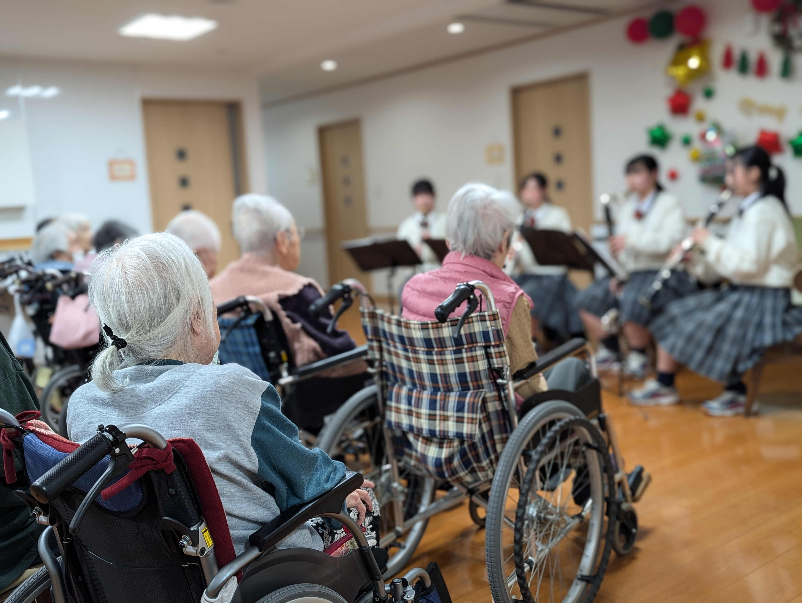
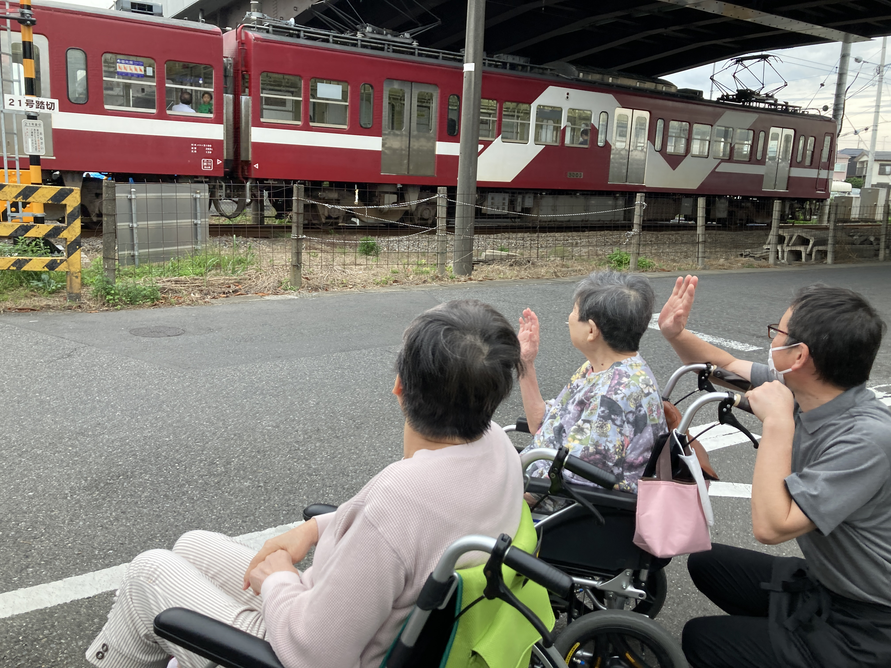
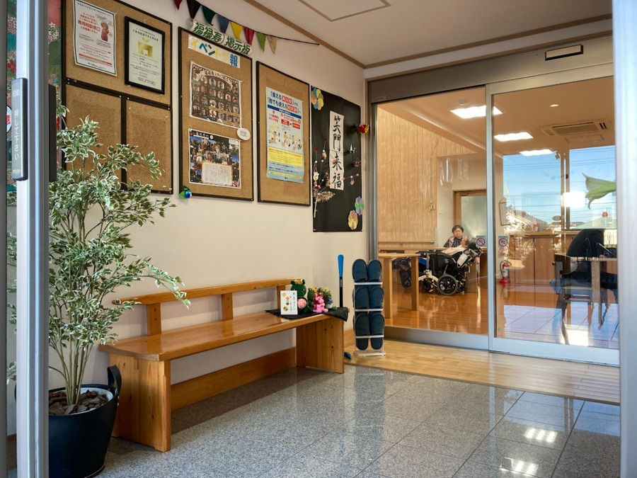
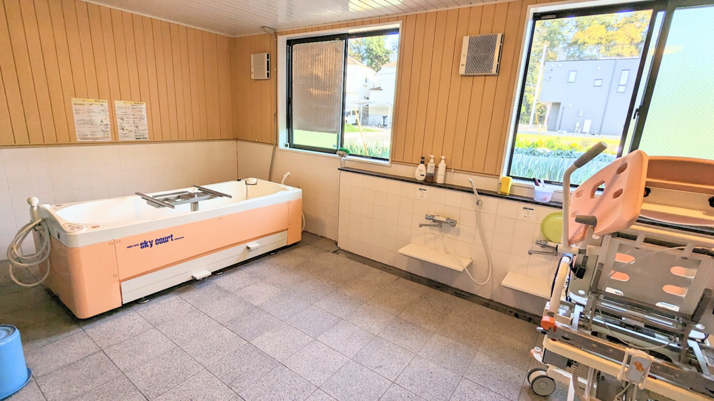

福禄寿は、最期の時間までお過ごしいただける「終の棲家」として安心して暮らせるサービス付き高齢者向け住宅です。「おもてなしの心と寄り添いの介護」を理念として、全20室の手と目と心が届く規模だからこそできる、一人ひとりの個別性に合わせた温かなケアをお届けします。


施設に入居すると、「これまでお世話になっていたケアマネジャーさんや先生とお別れしなければならないの？」と不安に思われる方が少なくありません。
福禄寿はサービス付き高齢者向け住宅（住宅型）のため、ご自宅で長年お世話になっていた担当ケアマネジャー様、かかりつけ医（訪問診療）、訪問看護、外部デイサービス等をご入居後もそのまま継続してご利用いただけます。
これまで築いてきた安心の人とのつながりを大切にしながら、24時間の見守りと温かいおもてなしで快適な毎日を支えます。
高齢者の方が安心して自立した暮らしを続けられる「バリアフリーの賃貸住宅」です。
有料老人ホームに比べ、高い自由度とお手軽な初期費用でご入居いただけるのが特徴です。
賃貸住宅契約のため、外出や面会、今までのケアマネジャーや外部デイサービスの利用が自由です。
介護スタッフが24時間常駐。日々の安否確認や生活相談、夜間の体調変化にも迅速に対応します。
高額な入居金は不要（一時金0円）。敷金のみで初期費用を抑えてご入居いただけます。
全20室の手と目と心が届く規模の中で、お一人おひとりの生活習慣や想いに寄り添うケアを提供しています。
全室プライバシーの保たれた個室設計（18.63㎡〜）。お気に入りの家具や思い出の品をお持ち込みいただき、ご自宅のように"自分らしく"落ち着いてお過ごしいただけます。

一般的な個浴槽に加え、寝たまま安全に温かいお風呂を楽しめる「機械浴槽」を完備。車椅子の方やお身体が重度化された方もご負担なく快適に入浴いただけます。

24時間スタッフ常駐はもちろん、地域の訪問看護・在宅サービス全般や提携診療所と密に連携。住み慣れた居室で最期まで温かくお看取りまでケアを行います。

ご相談からご見学、ご面談、ご入居まで専門スタッフが丁寧にご案内いたします。
空室状況の確認、料金のお見積もり、パンフレットのご請求などお気軽にお問い合わせください。
担当者が館内をご案内し、生活の様子やサービス内容を丁寧にご説明します。担当ケアマネジャー様のご同行も大歓迎です。
生活状況、お身体の状態、医療ニーズやご希望の生活習慣を詳しくお伺いし、最適なサポート体制を検討します。
賃貸借契約および生活支援サービス契約を締結いたします。高額な入居一時金は不要です。
スタッフ一同笑顔でお迎えいたします。お気に入りの家具を配置し、安心の新しい毎日をお過ごしください。
| 項目 | 個室（18.63㎡〜 / 1名） | 二人室（22.73㎡ / 2名） |
|---|---|---|
| 家賃 | 70,000円 | 130,000円 |
| 共益費 | 41,000円（1名あたり） | 82,000円（2名分） |
| サービス費 | 35,000円（1名あたり） | 70,000円（2名分） |
| 食費（3食✕30日） |
72,000円 （朝600円/昼900円/夕900円） |
144,000円（2名分） |
| 基本月額 合計 | 218,000 円 | 426,000 円 |
ご契約時の一時金・個別サービスについて
| 住宅種別 | サービス付き高齢者向け住宅 |
|---|---|
| 居室総数 | 全20室（個室 18.63㎡〜 / 二人室 22.73㎡） |
| 居室設備 | トイレ、洗面所、収納、空調設備、照明器具、ナースコール、介護用ベッド（レンタル） |
| 共用設備 | メインホール（食堂・談笑スペース）、浴室（個浴・機械浴槽）、談話室、車椅子対応設計 |
| 入居条件 | 概ね60歳以上の方、要支援・要介護認定を受けられている方 |
| 生活支援 | 居室清掃、洗濯代行、消耗品管理、買い物代行 |
|---|---|
| 身体介護 | 食事介助、入浴介助、排泄介助、移動移乗介助 |
| 健康管理 | 24時間安否確認、体調観察、服薬支援、緊急時対応 |
| 食事サービス | 栄養バランスに配慮した温かい1日3食のご提供 |
| 医療・看護連携 | 地域の在宅介護サービス全般・提携診療医との24時間連携・お看取り |
福禄寿のご入居や設備に関してよくいただくご質問にお答えします。
はい、入居一時金は0円です。ご契約時には家賃2か月分の敷金のみお預かりし、ご退居時に原状回復・修繕費を差し引いて全額返金いたします。高額な初期費用を抑えてご入居いただけます。
はい、すべてそのまま継続してご利用いただけます。福禄寿はサービス付き高齢者向け住宅（住宅型）ですので、現在担当されているケアマネジャー様、かかりつけ医（訪問診療）、訪問看護ステーション、お気に入りの外部デイサービスなどを変更することなくそのままご利用いただけます。
はい、ご入浴いただけます。福禄寿には寝たまま安全に入浴できる最新の「機械浴槽」を完備しております。介護スタッフがマンツーマンで付き添い、身体にご負担をかけずに温かいお風呂をお楽しみいただけます。
はい、住み慣れた居室で最期までお過ごしいただけます。福禄寿は「終の棲家」として運営しており、状態が重度化しても退去を迫ることなく、主治医や訪問看護ステーション コパン、ご家族様と密に連携して温かくお看取りまでケアを行います。
はい、22.73㎡の広々とした「二人室」をご用意しております。ご夫婦はもちろん、ご兄弟や親子でのご入居も可能です。空室状況はお気軽にお問い合わせください。
空室状況のご確認、施設・居室のご見学、料金のお見積もりなど、専門スタッフが丁寧にご案内いたします。